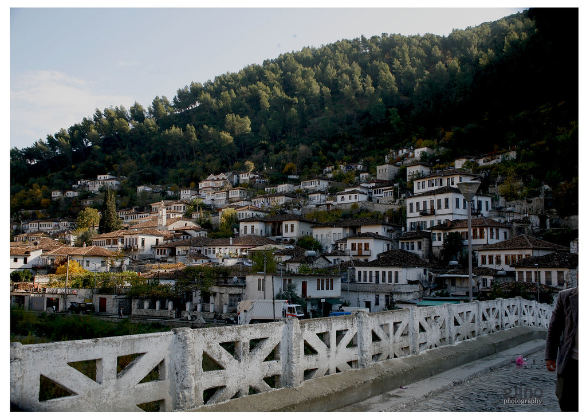

Gorica/Ura e Goricës |
Kështjella/Kalaja e Beratit |
Mangalemi |
Gorica/Ura E GoricësLumi Osum ndan lagjen Goricë nga lagjja Mangalem. Të dyja qëndrojnë përballë njëra-tjetrës dhe janë sa të ndryshme aq edhe |
KalajaKështjella ose kalaja, siç quhet nga beratasit është ndërtuar mbi kodrën shkëmbore në formë trekëndëshi, me perimetër të mureve 1440m, me 24 kulla e me dy porta.
Me themelet e saj ilire, e rindërtuar disa herë në shekujt VI, XIII, XV dhe XIX ajo është |
MangalemKompleksi i lagjes “Mangalem” është unik në artin e ndërtimeve. Ka formën e një piramide, që imiton siluetën e kodrës, në majën e së cilës është ngritur kështjella. Mangalemi është një nga pikat më të fotografuara, pikturuara, gdhendura në dru e gurë; është emblema e Beratit. Shtëpitë e bardha duket sikur i mbivendosen njëra-tjetrës, prandaj ndryshe Berati quhet “Qyteti i një mbi një dritareve”. |
|  | Vizitoni sesionin e Guides per me teper atraksione! |